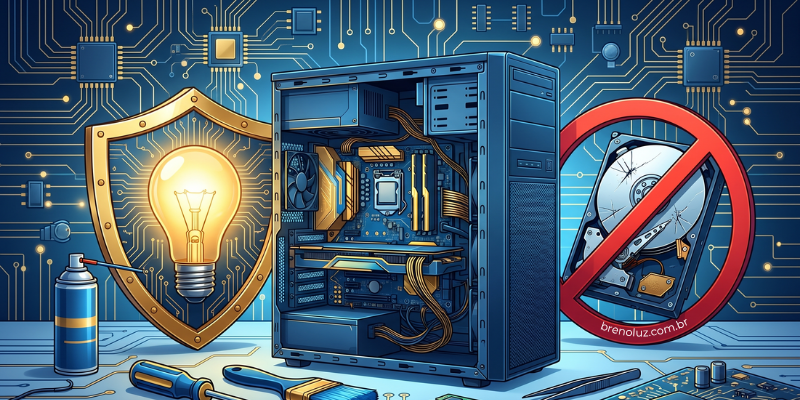

Mitos sobre manutenção de computadores: o que é verdade e o que prejudica seu PC
Publicado em
A manutenção de computadores ainda é cercada por informações incorretas que acabam prejudicando o desempenho e a vida útil dos equipamentos. Muitas pessoas acreditam em soluções rápidas encontradas na internet ou indicadas por conhecidos, mas que não resolvem o problema real e, em alguns casos, agravam a situação.
Um dos mitos mais comuns é acreditar que um computador lento está sempre relacionado à falta de memória RAM. Embora a memória influencie diretamente no desempenho, ela não é a única responsável pela lentidão. Problemas como programas iniciando junto com o sistema, disco rígido lento ou com falhas, sistema operacional desatualizado, presença de vírus e até falta de manutenção preventiva podem causar quedas significativas de desempenho. Antes de investir em upgrades, o ideal é realizar um diagnóstico técnico adequado.
Outro mito bastante difundido é a ideia de que formatar o computador resolve qualquer problema. A formatação pode corrigir falhas de software, mas não resolve defeitos físicos. Quando o computador apresenta superaquecimento, travamentos frequentes, desligamentos inesperados ou barulhos estranhos, o problema geralmente está no hardware. Nesses casos, formatar apenas apaga dados e não elimina a causa do defeito, fazendo com que o problema volte a aparecer.
Também é comum ouvir que o antivírus deixa o computador lento. Na prática, um antivírus confiável e bem configurado protege o sistema sem comprometer o desempenho. O que costuma causar lentidão são antivírus piratas, mal configurados, vários antivírus instalados ao mesmo tempo ou a presença de malware que passa despercebido pelo usuário. Segurança digital e desempenho podem coexistir quando o sistema está bem ajustado.
Muitas pessoas acreditam ainda que a limpeza do computador é apenas estética, limitada a passar um pano por fora do gabinete ou do notebook. Esse é um erro grave. A limpeza interna é essencial para evitar o acúmulo de poeira, que pode causar superaquecimento, redução de desempenho, falhas em componentes e desligamentos inesperados. Manutenção preventiva envolve cuidados internos realizados de forma correta e segura.
Outro mito que afasta muitos usuários da manutenção é a ideia de que computadores antigos não têm mais solução. Em diversos casos, ajustes simples são suficientes para devolver um desempenho satisfatório. A substituição do HD por um SSD, a otimização do sistema operacional, a remoção de programas desnecessários e uma boa limpeza interna podem prolongar a vida útil do equipamento por vários anos.
A verdade é que a manutenção de computadores não deve ser feita apenas quando o problema aparece. A manutenção preventiva ajuda a evitar falhas graves, melhora o desempenho, aumenta a durabilidade dos componentes e reduz custos futuros. Ignorar esses cuidados pode resultar em perda de dados importantes e gastos elevados com reparos emergenciais.
Confiar em mitos sobre manutenção de computadores pode custar caro. Sempre que surgirem problemas, o mais indicado é buscar um diagnóstico técnico confiável e adotar práticas corretas de manutenção. Cuidar do computador não é um gasto desnecessário, mas um investimento em desempenho, segurança e tranquilidade.